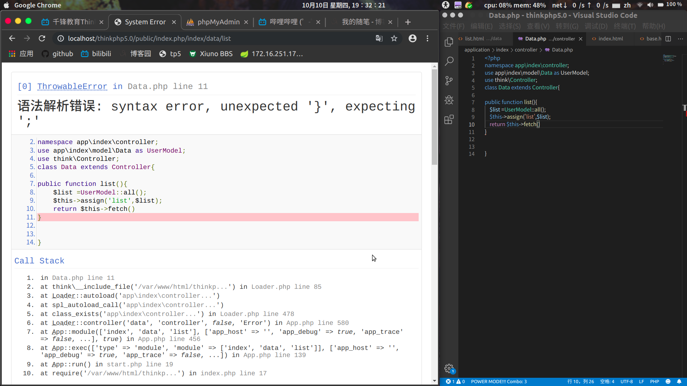

前期刚开始我是跟着b站上的千峰教育的视频走的，一路上做笔记进行深化与实际操作，中间因为不会开报错，并且视频里面也没有讲到怎么弄报错，因为是新手，那种出错了却不知道错在哪里是很难受的，于是我想着是不是我的工具不好，因为很多报错都是在集成的ide里面，于是我下载了phpstorm但是phpstorm对我的帮助不大，到头来还是觉得vscode之类的编辑器好用，百度查询找解决方案,最终发现tp框架的配置（config.php）里面把这里的调试打开就可以了。
// 应用调试模式
'app_debug' => true,这里我故意删了一个分号，在浏览器里面看到报错内容。

有错误提示了，自己能看懂的修改即可，不懂的也方便百度。
跟着视频走到最后两节的时候没有做笔记了，因为其实官方的开发手册有更详细的解释，跟着开发手册走也没有问题了，毕竟出错了看错在哪里就能得到解决。我觉得我没有必要把手册内容抄一份作为笔记了。
手册在官网就能下载和在线阅读。
tp框架总算是过了一遍了，后续打算做几个项目练练手，再进行更深入的学习。